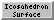

Icosahedron Surface 
Icosahedron Surface creates a surface representing
a linear interpolation between an icosahedron and a sphere.
The surface is for comparison to virus particles with icosahedral symmetry;
it can be colored by density data for such structures with
Surface
Color. Icosahedron Surface information is saved in
sessions.
See also:
shape
icosahedron,
hkcage,
meshmol
There are several ways to start
Icosahedron Surface, a tool in the
Higher-Order Structure category.
Clicking Show creates the surface according to the settings:
- Radius - radius of the sphere component and
distance from the center to a vertex of the icosahedron component
(the default is 100 display units,
generally Å); the value can be changed by entering a different
number or by moving the slider.
- Sphere factor
- weight to use for the sphere component, where
0 (default) yields an icosahedron and 1 yields a sphere; the value
can be changed by entering a different number or by moving the slider.
Values outside the range 0-1 can be used, but negative values such that
surface points pass through the origin will cause subsequent
Sphere factor settings to produce the wrong surface.
- Orientation - orientation of the icosahedron
- xyz 2-fold axes (default)
- with two-fold symmetry axes of the icosahedron along the x, y and z axes.
In the untransformed icosahedron,
a vertically oriented edge points at the user.
(Objects are untransformed when
no rotations/translations have been performed, or when the view has been
reset to the default.)
- xyz 2-fold axes, alt
- as above, except rotated 90° about the z axis.
In the untransformed icosahedron,
a horizontally oriented edge points at the user.
- x 2-fold, z 3-fold
- with a two-fold symmetry axis of the icosahedron along the x axis and a
three-fold symmetry axis along the z axis.
The y axis does not coincide with a symmetry axis.
A face of the untransformed
icosahedron points at the user.
- x 2-fold, z 3-fold, alt
- as above, except rotated 180° about the y axis.
- x 2-fold, z 5-fold
- with a two-fold symmetry axis of the icosahedron along the x axis and a
five-fold symmetry axis along the z axis.
The y axis does not coincide with a symmetry axis.
A vertex of the untransformed
icosahedron points at the user.
- x 2-fold, z 5-fold, alt
- as above, except rotated 180° about the y axis.
- y 2-fold, z 5-fold
- with a two-fold symmetry axis of the icosahedron along the y axis and a
five-fold symmetry axis along the z axis.
The x axis does not coincide with a symmetry axis.
A vertex of the untransformed
icosahedron points at the user.
- y 2-fold, z 5-fold, alt
- as above, except rotated 180° about the x axis.
- Subdivision factor
- how finely to subdivide the surface.
A factor of 1 (default) yields 20 triangles, the 20 faces of
the icosahedron. Values represent the number of subdivisions
within an edge of the icosahedron, and only non-negative
powers of 2 are used (1, 2, 4, 8, ...).
Other numbers can be entered, but will be rounded to a power of 2.
The spacing is the length of a subdivision.
- Surface style
- whether the surface should be shown as solid or mesh
- Color
- a color well
specifying the surface color
Only one "icosahedral" surface can be present at a time.
Changing any parameter automatically updates the surface.
Remove closes this surface model, while
Close dismisses the Icosahedron Surface dialog.
Help opens this manual page in a browser window.
TECHNICAL NOTES
Rounded edges.
Even when the Sphere factor
is zero, the edges of the icosahedron may appear to be rounded
because of the way the model is lit.
This is especially noticable in the solid
display style.
Each surface vertex has a normal vector that determines how light
reflects off the surface.
The vertices at the edges between faces of the icosahedron
have a normal vector midway between the normals of the faces.
This causes the edges to appear rounded instead of sharp.
A higher Subdivision factor
(e.g., 32 or 64) will make the edges look sharper.
Coloring.
The Surface
Color tool assigns each surface vertex a color;
between vertices, the colors are interpolated.
More detailed color variations will be apparent with a higher
Subdivision factor.
UCSF Computer Graphics Laboratory / December 2008